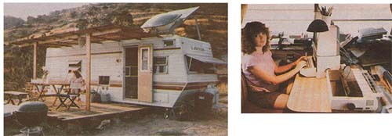

RIGHT: Sara works on her solar novel (solar-powered, that is!). Photovoltaic panels provide the current that runs her Apple computer. LEFT:. Sara and Bill are leading a crowded life in their RV-while they work on finishing their permanent home-but it's a unique one. All their electrical needs are supplied by the sun. (Note as well the breadbox solar water heater on the trailer's roof.)